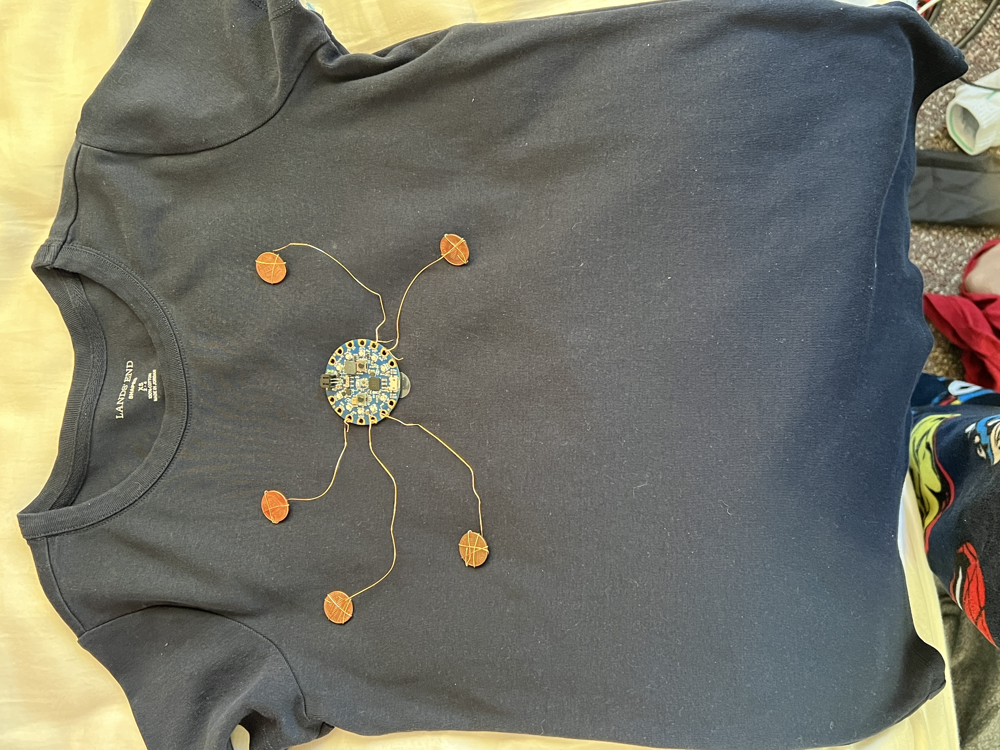
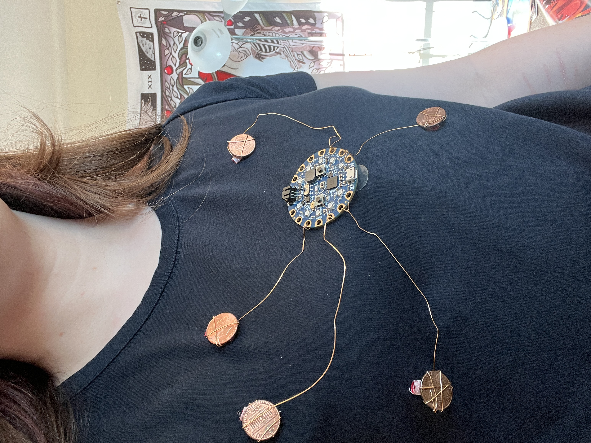

<html class ="projectfour"></html>

<link rel="stylesheet" href="website.css">
<h1><b>Final Project</b></h1>
<p><b>About the Project: For my final project, I decided to try and improve upon my third project, which was the crappy arc reactor. Overall, I feel like I was pretty successful with the additions that I made. I attatched the circuitboard to a shirt and created buttons out of pennies and copper wire to make the interface more accessible and eaier to use. I also made the circuitboard light up blue when activated as well.</b>  </p>

<div class="ahh">
    
    </div>
    
    <div class="ahh2">
        
    </div>
    
    <div class="finalprojs">
        <p><b>Demonstration:</b>
        <video width="600" height="340"  controls>
            <source src="finalproj.mp4" type="video/mp4">
            <source src="movie.ogg" type="video/ogg">
          Your browser does not support the video tag.
          </video>
        </div>
    
    